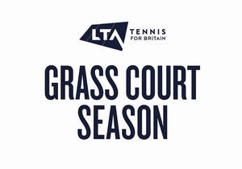
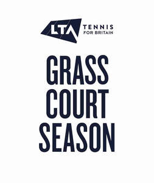
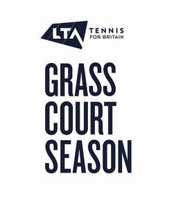
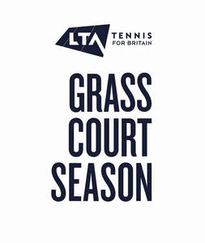

Trade Mark Journal No.2025/019 9 May 2025
UK00004198033 2 May 2025 (9,14,16,18,21,25,26,28,38,41,42,43,45)
Mark 1
Mark 2

Mark 3
Mark 4

Mark 5

Mark 6

- Class 9
- Apparatus and instruments for recording, transmitting, reproducing or processing sound, images or data; recorded and downloadable media; photographic and cinematographic apparatus and instruments; bags adapted for laptops; downloadable computer software applications; decorative magnets; downloadable graphics for mobile phones; downloadable image files; audio visual recordings; audio recordings; video recordings; downloadable e-books; downloadable educational course materials; downloadable podcasts; downloadable sound recordings; compact discs; downloadable electronic publications; downloadable electronic publications relating to sports, tennis and padel tennis; downloadable information relating to sports, tennis and padel tennis; downloadable instructional material; cases for mobile phones and tablet computers; covers for mobile phones and tablet computers; spectacles; sunglasses; cases for spectacles; cases for sunglasses; protective eyewear; smart watches; virtual reality software and hardware; augmented reality software and hardware; downloadable electronic games; artificial intelligence software; artificial intelligence apparatus.
- Class 14
- Jewellery; imitation jewellery; precious stones; horological and chronometric instruments; clocks; clock cases; key rings [trinkets or fobs]; medals; key fobs; necklaces; bracelets; rings [trinket]; cufflinks; tie clips; key rings; badges of precious metal; ornamental pins; tie pins; watch bands; watch straps; watches; sports watches; trophies of precious metals; prize cups of precious metal.
- Class 16
- Paper, cardboard; printed matter; stationery; instructional and teaching material; instructional and teaching material for sports, tennis and padel tennis; books; educational books; prints; pictures; graphic reproductions; photographs; framed photographs; postcards; greetings cards; memo pads; diaries; calendars; stickers; notebooks; printed cards; posters; periodical publications; newspapers; brochures; booklets; pamphlets; periodicals; papers; leaflets; magazines; journals; jotters; writing materials; writing implements; pens; clipboards; albums; score-cards; score pads; rosettes of paper; printed certificates.
- Class 18
- Bags; Trunks [luggage]; travelling bags; articles of luggage; travel cases; suitcases; handbags; purses; travel bags; brief cases; backpacks; duffel bags; shoe bags; sports bags; gym bags; school bags; satchels; holdalls; wallets; credit card holders; card cases; toiletry bags; shoulder belts; luggage tags; luggage labels; rucksacks; umbrellas; walking sticks.
- Class 21
- Household or kitchen utensils and containers; cookware and tableware; combs and sponges; brushes; articles for cleaning purposes; glassware, porcelain and earthenware; cool bags; lunch boxes; fitted toilet bags; thermal insulated bags for food or beverages; mugs; ceramic mugs; cups; plates; bowls; drinking vessels; vacuum flasks; bottles; tumblers; tankards; vacuum mugs; bottles; drinking bottles; sports bottles.
- Class 25
- Clothing; headgear; footwear; sports footwear; sportswear; sports clothing; leisurewear; sports clothing; tennis wear; socks; track suits; training suits; knitwear; sweatshirts; sweaters; tops; hooded tops; shirts; t-shirts; jerseys; tank-tops; bottoms; trousers; shorts; skirts; dresses; underclothing; jackets; outerclothing; shoes; trainers; ties; gloves; belts [clothing]; wrist bands; sweatbands; bibs; hats; caps; visors; headbands.
- Class 26
- Badges; emblems; patches; brooches; buttons; hair decorations; lanyards for wear; rosettes of textile materials; decorative ribbons; prize ribbons; shoe ornaments, not of precious metal; shoe laces; expanding armbands for holding sleeves; hair ornaments; hairbands; competitors’ numbers.
- Class 28
- Sporting articles and apparatus; sporting equipment; sports training apparatus; sports games; sporting articles for use in tennis; tennis equipment; balls for use in sports; balls for games; toys; games; playthings; soft toys; novelty toys; novelty masks; balloons; bags adapted for carrying sporting articles and equipment; games adapted for use with television receivers; electronic games; computer games apparatus; coin/counter-operated games; rackets; tennis rackets; racket cases; sports balls; gloves for games; gloves for sports; protective padding and supports for sports; knee pads and knee guards for sports use; elbow guards; racket grip tapes; electronic games; games consoles; nets for sports; tennis nets.
- Class 38
- Telecommunications; providing user access to information on the Internet; telecommunication of information; multimedia telecommunications data transmission and data broadcasting; data streaming; streaming of audio, visual and audiovisual content on the Internet; video, audio and television streaming services; streaming of sporting events; streaming of tennis events; transmission and delivery of data, audio, video and multimedia files, including downloadable files and files streamed over a global computer network; communications services; broadcasting services; broadcasting via television, radio or over the Internet broadcasting; transmission of radio and television programmes; television broadcasting services; broadcasting of sporting events; broadcasting of tennis events; electronic mail services; telecommunication portal services; electronic display of information, messages, text, images and data; on-line communication services; on-line transmission of electronic publications; mobile telephone communication services; provision of communication services by means of computers.
- Class 41
- Entertainment; sporting and cultural activities; provision of recreational facilities; sports entertainment services; sports club services; organisation, arrangement and conducting of sporting competitions and sports events; entertainment services provided by on-line streams; live entertainment services; sporting education services; sports coaching; sports tuition, coaching and instruction; providing on-line electronic publication [not downloadable]; coaching; sports camp services; sports club services; physical fitness tuition and instruction; physical education services; provision of courses of instruction in coaching, player development and child protection and welfare; providing courses of instruction in self-awareness; rental of sports equipment; organisation, arrangement and conducting of tennis competitions and tennis events; organisation, arrangement and conducting of tennis games and padel tennis games; tennis academy services; tennis education services; tennis tuition, coaching, mentoring and instruction; providing tennis training facilities; providing information on-line relating to tennis and padel tennis; providing information on-line relating to sport; officiating at tennis contests; arranging and conducting seminars, conferences and exhibitions relating to tennis; organising and conducting volunteer programs and community activity projects; organising and conducting volunteer programs and community activity projects relating to sports, tennis and padel tennis.
- Class 42
- Technical advisory services relating to sports grounds, facilities and equipment, all relating to sports, tennis and padel tennis.
- Class 43
- Bar, restaurant and café services; sports bar services; catering services.
- Class 45
- Setting of standards, rules and regulations relating to the games of lawn tennis and padel tennis.
LTA Operations Limited
Representative: Boult Wade Tennant LLP